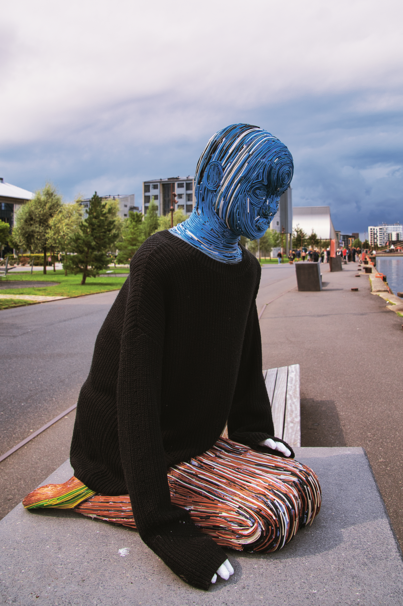
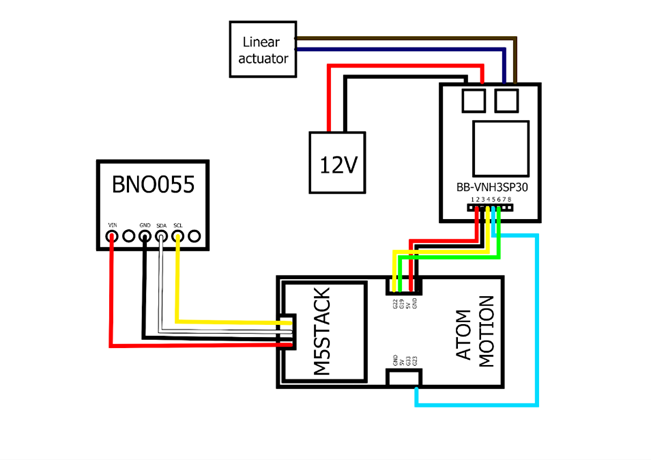

Beneath The Weight
Conversational AI as a sense-making tool for physical and mental well-being
Role: Concept Developer, Physical Fabricator, and Interactive Systems Designer
Context: 6th semester Bachelor project at Aalborg University
Timeframe: Spring 2024
Description: This study investigates how people experience and use conversational AI when managing everyday physical and mental well-being concerns. Based on 20 semi-structured interviews and a scenario-based chatbot task analysed using reflexive thematic analysis, the study reveals that chatbots function as low-friction, accessible sense-making tools that help users organize uncertain symptoms and thoughts into manageable explanations and next steps.

Solution and Conclusion
Conclusion: The sculpture physically responds via an M5Stack microcontroller, linear actuator, and PID motor controller synchronized with a layered, 3-minute generative soundscape analysing audio amplitude in Processing. Evaluated through walk-along interviews with exhibition visitors at AAU Create, the project demonstrated that dynamic, material-honest sculptures successfully bridge sensory engagement and critical public discourse on sustainability.
Visuals & Artifacts

